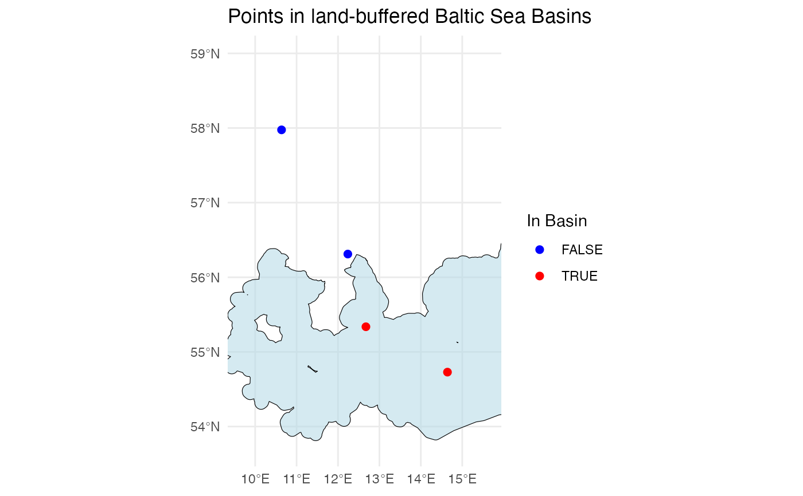

ifcb_is_in_basin.RdThis function checks if vectors of latitude and longitude points are within a user-supplied sea basin. The Baltic Sea (including Öresund) basins are included as a pre-packaged shapefile in the `iRfcb` package.
ifcb_is_in_basin(latitudes, longitudes, plot = FALSE, shape_file = NULL)A numeric vector of latitude points.
A numeric vector of longitude points.
A boolean indicating whether to plot the points and the sea basin. Default is FALSE.
The absolute path to a custom polygon shapefile in WGS84 (EPSG:4326) that represents the specific sea basin. Default is a land-buffered shapefile of the Baltic Sea basins (including Öresund), included in the `iRfcb` package.
A logical vector indicating whether each point is within the specified sea basin, or a plot with the points and basins if `plot = TRUE`.
This function reads a pre-packaged shapefile of the Baltic Sea Basin from the `iRfcb` package by default, or a user-supplied shapefile if provided. It sets the CRS, transforms the CRS to WGS84 (EPSG:4326) if necessary, and checks if the given points fall within the specified sea basin. Optionally, it plots the points and the sea basin polygons together.
# Define example latitude and longitude vectors
latitudes <- c(55.337, 54.729, 56.311, 57.975)
longitudes <- c(12.674, 14.643, 12.237, 10.637)
# Check if the points are in the Baltic Sea Basin
points_in_the_baltic <- ifcb_is_in_basin(latitudes, longitudes)
print(points_in_the_baltic)
#> [1] TRUE TRUE FALSE FALSE
# Plot the points and the basin
ifcb_is_in_basin(latitudes, longitudes, plot = TRUE)
